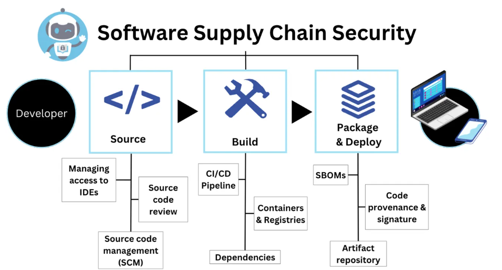

Software supply chains play a critical role in delivering reliable and secure software products to end-users. However, recent high-profile security breaches and supply chain attacks have highlighted the vulnerabilities inherent in these systems. This project focuses on enhancing software supply chain security through innovative techniques such as LLM agents, fine-grained program dependency construction, clone detection, vulnerability recognition, vulnerability propagation analysis, and security pre-warning. The ultimate goal of this project aligns closely with the principles of AppSecOps, aiming to integrate security practices into the application development and operations processes throughout the software lifecycle.
As every developer knows, maintaining software and fixing software bugs are difficult and extremely time-consuming. Researchers have proposed automated patch generation techniques to help developers fix software bugs. However, it is very hard to ensure that automatically generated patches reflect the intent of developers. This project aims to efficiently generate high-quality patches for fixing security issues.
Fix2Fit & VulnFix are techniques that generate patches by combining test generation and patch generation. Existing repair techniques take a test suite as the correctness criterion, which may lead to overfitting patches — patched programs that pass the given tests but still fail on tests outside them. Fix2Fit/VulnFix alleviates the overfitting problem via intelligent test generation to filter out overfitting patches, providing greater confidence about the correctness of suggested patches.
ExtractFix presents a repair method that fixes program vulnerabilities based on semantic reasoning. Given a vulnerability evidenced by an exploit, ExtractFix extracts a constraint representing the vulnerability. This constraint serves as a proof obligation that the synthesized patch should satisfy, ensuring that generated patches completely fix the vulnerabilities.
Writing thorough tests is tedious yet indispensable to software quality. Large Language Models (LLMs) have been explored to automate test generation and maintenance. However, it is very hard to ensure that LLM-generated tests capture deep semantic properties, handle language-specific nuances like dynamic typing, and effectively reveal hidden faults beyond superficial coverage. This project aims to systematically integrate LLMs with classical software engineering techniques — genetic algorithms, type inference, and adversarial specification validation — to generate rigorous, context-aware, and semantically trustworthy tests.
Property-Based Testing — Tests should not just check if code runs, but verify whether it behaves correctly under all conditions. Yet LLMs often generate shallow tests that only exercise the happy path. We push LLMs to think in terms of properties: the rules, invariants, and contracts that define correct behavior. Our approach teaches the LLM to challenge its own generated tests by looking for loopholes: if a test passes the code but fails to catch a subtle violation of the intended rule, we refine the test until it does. By learning from existing test patterns and actively probing for semantic gaps, our method has uncovered 45 real-world bugs in widely-used libraries.
Test4Py — Testing dynamic programming languages (like Python) is notoriously tricky because types are not explicitly declared, making it hard to know what inputs a function expects or what outputs it should produce. LLMs often generate tests that simply cannot run due to type mismatches. Test4Py makes LLMs "type-aware": it understands how functions are actually used in practice and generates test inputs that are both valid and meaningful.